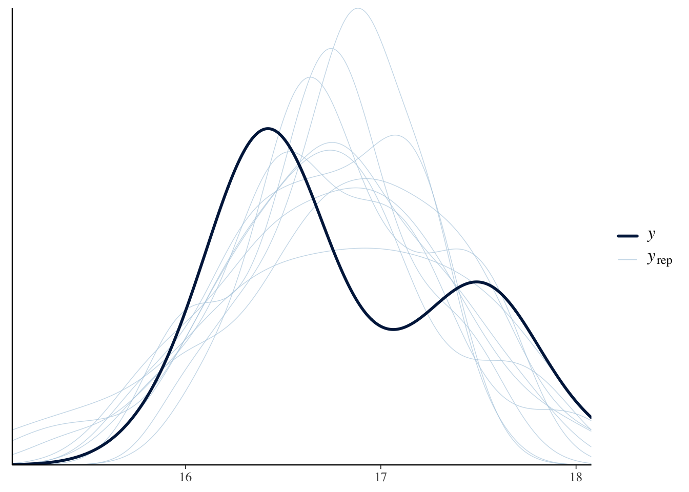

{
library(bayesplot)
library(brms)
library(dplyr)
library(ggplot2)
library(ggdist)
library(grid)
library(tidybayes)
library(tidyr)
library(trps)
library(viridis)
}1 Our Objectives
The purpose of this vignette is to learn how to estimate trophic position of a species using stable isotope data (\(\delta^{13}C\) and \(\delta^{15}N\)) using the package {trps}. We can estimate trophic position using several different models but for the purpose of this vignette a one source model is the simplest and easiest to implement. The one source model is based on equations from Post (2002).
If you are wanting to use other trophic position models please walk through this vignette and then check out other vignettes under the article section of the webpage.
2 Trophic Position Model
The equation for a one source model consists of the following:
\[ \text{Trophic Position} = \lambda + \frac{(\delta^{15}N_c - \delta^{15}N_b)}{\Delta N} \]
Where \(\lambda\) is the trophic position of the baseline (e.g., 2), \(\delta^{15}N_c\) is the \(\delta^{15}N\) of the consumer, \(\delta^{15}N_b\) is the mean \(\delta^{15}N\) of the baseline, and \(\Delta N\) is the trophic enrichment factor (e.g., 3.4).
To use this model with a Bayesian framework, we need to rearrange this equation to the following:
\[ \delta^{15}N_c = \delta^{15}N_b + \Delta N \times (\text{Trophic Position} - \lambda) \]
The function one_source_model() uses this rearranged equation.
3 Vignette structure
First we need to organize the data prior to running the model. To do this work we will use {dplyr} and {tidyr} but we could also use {data.table}.
When running the model we will use {trps} and {brms}.
Once we have run the model we will use {bayesplot} to assess models and then extract posterior draws using {tidybayes}. Posterior distributions will be plotted using {ggplot2} and {ggdist} with colours provided by {viridis}.
4 Load packages
First we load all the packages needed to carry out the analysis.
5 Assess data
In {trps} we have several data sets, they include stable isotope data (\(\delta^{13}C\) and \(\delta^{15}N\)) for a consumer, lake trout (Salvelinus namaycush), a benthic baseline, amphipods, and a pelagic baseline, dreissenids, for an ecoregion in Lake Ontario.
5.1 Consumer data
We check out each data set with the first being the consumer.
consumer_iso# A tibble: 30 × 4
common_name ecoregion d13c d15n
<fct> <fct> <dbl> <dbl>
1 Lake Trout Embayment -22.9 15.9
2 Lake Trout Embayment -22.5 16.2
3 Lake Trout Embayment -22.8 17.0
4 Lake Trout Embayment -22.3 16.6
5 Lake Trout Embayment -22.5 16.6
6 Lake Trout Embayment -22.3 16.6
7 Lake Trout Embayment -22.3 16.6
8 Lake Trout Embayment -22.5 16.2
9 Lake Trout Embayment -22.9 16.4
10 Lake Trout Embayment -22.3 16.3
# ℹ 20 more rowsWe can see that this data set contains the common_name of the consumer , the ecoregion samples were collected from, and \(\delta^{13}C\) (d13c) and \(\delta^{15}N\) (d15n).
5.2 Baseline data
Next we check out the benthic baseline data set.
baseline_1_iso# A tibble: 14 × 5
common_name ecoregion d13c_b1 d15n_b1 id
<fct> <fct> <dbl> <dbl> <int>
1 Amphipoda Embayment -26.2 8.44 1
2 Amphipoda Embayment -26.6 8.77 2
3 Amphipoda Embayment -26.0 8.05 3
4 Amphipoda Embayment -22.1 13.6 4
5 Amphipoda Embayment -24.3 6.99 5
6 Amphipoda Embayment -22.1 7.95 6
7 Amphipoda Embayment -24.7 7.37 7
8 Amphipoda Embayment -26.6 6.93 8
9 Amphipoda Embayment -24.6 6.97 9
10 Amphipoda Embayment -22.1 7.95 10
11 Amphipoda Embayment -24.7 7.37 11
12 Amphipoda Embayment -22.1 7.95 12
13 Amphipoda Embayment -24.7 7.37 13
14 Amphipoda Embayment -26.9 10.2 14We can see that this data set contains the common_name of the baseline, the ecoregion samples were collected from, and \(\delta^{13}C\) (d13c_b1) and \(\delta^{15}N\) (d15n_b1).
6 Organizing data
Now that we understand the data we need to combine both data sets to estimate trophic position for our consumer.
To do this we first need to make an id column in each data set, which will allow us to join them together. We first arrange() the data by ecoregion and common_name. Next we group_by() the same variables, and add id for each grouping using row_number(). Always ungroup() the data.frame after using group_by(). Lastly, we use dplyr::select() to rearrange the order of the columns.
6.1 Consumer data
Let’s first add id to consumer_iso data frame.
con_os <- consumer_iso %>%
arrange(ecoregion, common_name) %>%
group_by(ecoregion, common_name) %>%
mutate(
id = row_number()
) %>%
ungroup() %>%
dplyr::select(id, common_name:d15n)You will notice that I have renamed this object to con_os this is because we are modifying con_os. I have done the same to the baseline and combined objects below.
6.2 Baseline data
Next let’s add id to baseline_1_iso data frame. For joining purposes we are going to drop common_name from this data frame.
b1_os <- baseline_1_iso %>%
arrange(ecoregion, common_name) %>%
group_by(ecoregion, common_name) %>%
mutate(
id = row_number()
) %>%
ungroup() %>%
dplyr::select(id, ecoregion:d15n_b1)6.3 Joining isotope data
Now that we have the consumer and baseline data sets in a consistent format we can join them by "id" and "ecoregion" using left_join() from {dplyr}.
combined_iso_os <- con_os %>%
left_join(b1_os, by = c("id", "ecoregion"))We can see that we have successfully combined our consumer and baseline data. We need to do one last thing prior to analyzing the data, and that is calculate the mean \(\delta^{13}C\) (c1) and \(\delta^{15}N\) (n1) for the baseline and add in the constant \(\lambda\) (l1) to our data frame. We do this by using groub_by() to group the data by our two groups, then using mutate() and mean() to calculate the mean values.
Important note, to run the model successfully, columns need to be named d15n, n1, and l1.
combined_iso_os_1 <- combined_iso_os %>%
group_by(ecoregion, common_name) %>%
mutate(
c1 = mean(d13c_b1, na.rm = TRUE),
n1 = mean(d15n_b1, na.rm = TRUE),
l1 = 2
) %>%
ungroup()Let’s view our combined data.
combined_iso_os_1# A tibble: 30 × 10
id common_name ecoregion d13c d15n d13c_b1 d15n_b1 c1 n1 l1
<int> <fct> <fct> <dbl> <dbl> <dbl> <dbl> <dbl> <dbl> <dbl>
1 1 Lake Trout Embayment -22.9 15.9 -26.2 8.44 -24.6 8.28 2
2 2 Lake Trout Embayment -22.5 16.2 -26.6 8.77 -24.6 8.28 2
3 3 Lake Trout Embayment -22.8 17.0 -26.0 8.05 -24.6 8.28 2
4 4 Lake Trout Embayment -22.3 16.6 -22.1 13.6 -24.6 8.28 2
5 5 Lake Trout Embayment -22.5 16.6 -24.3 6.99 -24.6 8.28 2
6 6 Lake Trout Embayment -22.3 16.6 -22.1 7.95 -24.6 8.28 2
7 7 Lake Trout Embayment -22.3 16.6 -24.7 7.37 -24.6 8.28 2
8 8 Lake Trout Embayment -22.5 16.2 -26.6 6.93 -24.6 8.28 2
9 9 Lake Trout Embayment -22.9 16.4 -24.6 6.97 -24.6 8.28 2
10 10 Lake Trout Embayment -22.3 16.3 -22.1 7.95 -24.6 8.28 2
# ℹ 20 more rowsIt is now ready to be analyzed!
7 Bayesian Analysis
We can now estimate trophic position for lake trout in an ecoregion of Lake Ontario.
There are a few things to know about running a Bayesian analysis, I suggest reading these resources:
- Basics of Bayesian Statistics - Book
- General Introduction to brms
- Estimating non-linear models with brms
- Nonlinear modelling using nls nlme and brms
- Andrew Proctor’s - Module 6
- van de Schoot et al., (2021)
7.1 Priors
Bayesian analyses rely on supplying uninformed or informed prior distributions for each parameter (coefficient; predictor) in the model. The default informed priors for a one source model are the following, \(\Delta N\) assumes a normal distribution (dn; \(\mu = 3.4\); \(\sigma = 0.25\)), trophic position assumes a uniform distribution (lower bound = 2 and upper bound = 10), \(\sigma\) assumes a uniform distribution (lower bound = 0 and upper bound = 10), and if informed priors are desired for \(\delta^{15}N_b\) (n1; \(\mu = 9\); \(\sigma = 1\)), we can set the argument bp to TRUE in all one_source_ functions.
You can change these default priors using one_source_priors_params(), however, I would suggest becoming familiar with Bayesian analyses, your study species, and system prior to adjusting these values.
7.2 Model convergence
It is important to always run the model with at least 2 chains. If the model does not converge you can try to increase the following:
The amount of samples that are burned-in (discarded; in
brm()this can be controlled by the argumentwarmup)The number of iterative samples retained (in
brm()this can be controlled by the argumentiter).The number of samples drawn (in
brm()this is controlled by the argumentthin).The
adapt_deltavalue usingcontrol = list(adapt_delta = 0.95).
When assessing the model we want \(\hat R\) to be 1 or within 0.05 of 1, which indicates that the variance among and within chains are equal (see {rstan} documentation on \(\hat R\)), a high value for effective sample size (ESS), trace plots to look “grassy” or “caterpillar like,” and posterior distributions to look relatively normal.
8 Estimating trophic position
We will use functions from {trps} that drop into a {brms} model. These functions are one_source_model() which provides brm() the formula structure needed to run a one source model. Next brm() needs the structure of the priors which is supplied to the prior argument using one_source_priors(). Lastly, values for these priors are supplied through the stanvars argument using one_source_priors_params(). You can adjust the mean (\(\mu\)), variance (\(\sigma\)), or upper and lower bounds (lb and ub) for each prior of the model using one_source_priors_params(), however, only adjust priors if you have a good grasp of Bayesian frameworks and your study system and species.
8.1 Model
Let’s run the model!
model_output_os <- brm(
formula = one_source_model(),
prior = one_source_priors(),
stanvars = one_source_priors_params(),
data = combined_iso_os_1,
family = gaussian(),
chains = 2,
iter = 4000,
warmup = 1000,
cores = 4,
seed = 4,
control = list(adapt_delta = 0.95)
)Compiling Stan program...Start sampling8.2 Model output
Let’s view the summary of the model.
model_output_os Family: gaussian
Links: mu = identity; sigma = identity
Formula: d15n ~ n1 + dn * (tp - l1)
dn ~ 1
tp ~ 1
Data: combined_iso_os_1 (Number of observations: 30)
Draws: 2 chains, each with iter = 4000; warmup = 1000; thin = 1;
total post-warmup draws = 6000
Regression Coefficients:
Estimate Est.Error l-95% CI u-95% CI Rhat Bulk_ESS Tail_ESS
dn_Intercept 3.38 0.25 2.90 3.87 1.00 1435 1836
tp_Intercept 4.54 0.19 4.20 4.95 1.00 1430 1885
Further Distributional Parameters:
Estimate Est.Error l-95% CI u-95% CI Rhat Bulk_ESS Tail_ESS
sigma 0.61 0.08 0.48 0.80 1.00 2097 1929
Draws were sampled using sampling(NUTS). For each parameter, Bulk_ESS
and Tail_ESS are effective sample size measures, and Rhat is the potential
scale reduction factor on split chains (at convergence, Rhat = 1).We can see that \(\hat R\) is 1 meaning that variance among and within chains are equal (see {rstan} documentation on \(\hat R\)) and that ESS is quite large. Overall, this means the model is converging and fitting accordingly.
8.3 Trace plots
Let’s view trace plots and posterior distributions for the model.
plot(model_output_os)We can see that the trace plots look “grassy” meaning the model is converging!
9 Predictive posterior check
We can check how well the model is predicting the \(\delta^{15}N\) of the consumer using pp_check() from {bayesplot}.
pp_check(model_output_os)Using 10 posterior draws for ppc type 'dens_overlay' by default.
We can see that posteriors draws (\(y_{rep}\); light lines) are effectively modeling \(\delta^{15}N\) of the consumer (\(y\); dark line).
10 Posterior draws
Let’s again look at the summary output from the model.
model_output_os Family: gaussian
Links: mu = identity; sigma = identity
Formula: d15n ~ n1 + dn * (tp - l1)
dn ~ 1
tp ~ 1
Data: combined_iso_os_1 (Number of observations: 30)
Draws: 2 chains, each with iter = 4000; warmup = 1000; thin = 1;
total post-warmup draws = 6000
Regression Coefficients:
Estimate Est.Error l-95% CI u-95% CI Rhat Bulk_ESS Tail_ESS
dn_Intercept 3.38 0.25 2.90 3.87 1.00 1435 1836
tp_Intercept 4.54 0.19 4.20 4.95 1.00 1430 1885
Further Distributional Parameters:
Estimate Est.Error l-95% CI u-95% CI Rhat Bulk_ESS Tail_ESS
sigma 0.61 0.08 0.48 0.80 1.00 2097 1929
Draws were sampled using sampling(NUTS). For each parameter, Bulk_ESS
and Tail_ESS are effective sample size measures, and Rhat is the potential
scale reduction factor on split chains (at convergence, Rhat = 1).We can see that \(\Delta N\) is estimated to be 3.37 with l-95% CI of 2.89, and u-95% CI of 3.86. If we move down to trophic position (tp) we see trophic position is estimated to be 4.54 with l-95% CI of 4.21, and u-95% CI of 4.96.
10.1 Extract posterior draws
We use functions from {tidybayes} to do this work. First we look at the the names of the variables we want to extract using get_variables().
get_variables(model_output_os) [1] "b_dn_Intercept" "b_tp_Intercept" "sigma" "lprior"
[5] "lp__" "accept_stat__" "stepsize__" "treedepth__"
[9] "n_leapfrog__" "divergent__" "energy__" You will notice that "b_tp_Intercept" is the name of the variable that we are wanting to extract. We extract posterior draws using gather_draws(), and rename "b_tp_Intercept" to tp.
post_draws <- model_output_os %>%
gather_draws(b_tp_Intercept) %>%
mutate(
ecoregion = "Embayment",
common_name = "Lake Trout",
.variable = "tp"
) %>%
dplyr::select(common_name, ecoregion, .chain:.value)Let’s view the post_draws
post_draws# A tibble: 6,000 × 7
# Groups: .variable [1]
common_name ecoregion .chain .iteration .draw .variable .value
<chr> <chr> <int> <int> <int> <chr> <dbl>
1 Lake Trout Embayment 1 1 1 tp 4.23
2 Lake Trout Embayment 1 2 2 tp 4.26
3 Lake Trout Embayment 1 3 3 tp 4.39
4 Lake Trout Embayment 1 4 4 tp 4.44
5 Lake Trout Embayment 1 5 5 tp 4.33
6 Lake Trout Embayment 1 6 6 tp 4.74
7 Lake Trout Embayment 1 7 7 tp 5.06
8 Lake Trout Embayment 1 8 8 tp 4.40
9 Lake Trout Embayment 1 9 9 tp 4.42
10 Lake Trout Embayment 1 10 10 tp 4.30
# ℹ 5,990 more rowsWe can see that this consists of seven variables:
ecoregioncommon_name.chain.iteration(number of sample after burn-in).draw(number of samples fromiter).variable(this will have different variables depending on what is supplied togather_draws()).value(estimated value)
11 Extracting credible intervals
Considering we are likely using this information for a paper or presentation, it is nice to be able to report the median and credible intervals (e.g., equal-tailed intervals; ETI). We can extract and export these values using spread_draws() and median_qi from {tidybayes}.
We rename b_tp_Intercept to tp, add the grouping columns, round all columns that are numeric to two decimal points using mutate_if(), and rearrange the order of the columns using dplyr::select().
medians_ci <- model_output_os %>%
spread_draws(b_tp_Intercept) %>%
median_qi() %>%
rename(
tp = b_tp_Intercept
) %>%
mutate(
ecoregion = "Embayment",
common_name = "Lake Trout"
) %>%
mutate_if(is.numeric, round, digits = 2) %>%
dplyr::select(ecoregion, common_name, tp:.interval)Let’s view the output.
medians_ci# A tibble: 1 × 8
ecoregion common_name tp .lower .upper .width .point .interval
<chr> <chr> <dbl> <dbl> <dbl> <dbl> <chr> <chr>
1 Embayment Lake Trout 4.52 4.2 4.95 0.95 median qi I like to use {openxlsx} to export these values into a table that I can use for presentations and papers. For the vignette I am not going to demonstrate how to do this but please check out {openxlsx}.
12 Plotting posterior distributions – single species or group
Now that we have our posterior draws extracted we can plot them. To analyze a single species or group, I like using density plots.
12.1 Density plot
For this example we first plot the density for posterior draws using geom_density().
ggplot(data = post_draws, aes(x = .value)) +
geom_density() +
theme_bw(base_size = 15) +
theme(
panel.grid = element_blank()
) +
labs(
x = "P(Trophic Position | X)",
y = "Density"
)12.2 Point interval
Next we plot it as a point interval plot using stat_pointinterval().
ggplot(data = post_draws, aes(
y = .value,
x = common_name
)) +
stat_pointinterval() +
theme_bw(base_size = 15) +
theme(
panel.grid = element_blank()
) +
labs(
x = "P(Trophic Position | X)",
y = "Density"
)Congratulations we have estimated the trophic position for Lake Trout!
I’ll demonstrate in another vignette (i.e, one source - multiple groups) how to run the model with an iterative process to produce estimates of trophic position for more than one group (e.g., comparing trophic position among species or in this case different ecoregions).
Now that you have gone through a one source model, you may be looking to model trophic position using a two source model. Please see the following vignette on how to setup and run a two source model Estimate trophic position - two source model. The same iterative processes used in one source - multiple groups can be applied to the two source model.
To view all vignettes, please check out {trps}’s webpage.